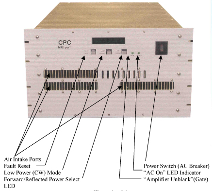
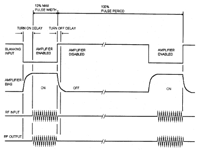

- 00000018WIA30162E20GYZ
- id_131067313.0
- Aug 29, 2019 1:40:57 AM
2KW and 4KW MNS Amp (CPC) Troubleshooting
| Required persons | Preliminary requirements | Procedure | Finalization |
|---|---|---|---|
| 1 | Not Applicable | Not Applicable | Not Applicable |
| ||||
This document contains possible error messages and faults due to the CPC Amp. It is not an exhaustive list of possible faults due to the CPC Amp. If you experience a fault due to the CPC that is not listed in this document, please communicate this to Service Engineering.
Diagnostics
- The system status of the CPC amp is displayed on the front panel of
the CPC. The indicators reflect the following states:
AC Power On
Amplifier state: stand-by/ready/initialization
Un-Blanking signal
Fault messages
CW/Pulse mode
-
Figure 1.
The amplifier is controlled via the 25-pin sub-D control connector, which
is labeled J8 on the CPC (pin-out of this connector can be found at the end
of this document in Table 3)
The fault conditions against which the amplifier is protected are reported
via the control connector J8 and are displayed on the amplifier’s front
panel. In the event of a fault, RF energy output is prevented. Faults and
corrective actions are listed in Problem / Solution Table of
this document.
Figure 1. Front Panel of the CPC Amp 
Problem / Solution Table
- The faults that are reported on the front panel of the CPC amp along with their corrective actions and, if applicable, related replacements, are listed in Table 3.
- After correcting the fault that triggered detection, press the “Fault
Reset” button on the CPC amplifier. If the fault message still appears,
the fault has not yet been fully corrected.
Table 3. Troubleshooting by Symptom SYMPTOM PROBABLE CAUSE GE FIELD ACTION RELATED REPLACEMENTS “Overdrive” (Input Overdrive) Excessive RF Input Level: +15dBm input drive limit exceeded – Exciter Board emitting too much RF
The output of the exciter board should never get high enough to produce this error on the CPC amp. (Exciter Output < 4dBm). Check cabling on the RF Input and Run Diagnostics on the Slave Exciter Board. It is likely that the slave exciter board will need to be replaced. Slave Exciter Board Maximum Peak Power Miscalibration of gain Lower gain on rear of amplifier Maximum Average Power Average power Greater than 400W (4KW Amp)
Average Power Greater than 200W (2KW Amp)
Check that the combination of peak power, duty cycle and pulse shape result in an average power of less than 400W for the 4kw Amp and less than 200W for the 2KW amp. If not, change protocol. “High Load VSWR” (Maximum VSWR) The load on the CPC amplifier is not 50 Ohms Check transmit cables, TR Switch and coil for proper tuning. “Thermal Fault” (Over Temperature) The amplifier’s enclosure is greater than 20ºC above the room’s ambient temperature. Due to Restricted Air flow or high ambient temperature. Check that airflow is not impeded. Check that the air intake vents (Figure 1) in the front and the fans at the rear of the amplifier are not blocked. Clean air filterCheck ambient air temperature.Allow sufficient time for the heat sinks to cool, then reset the fault. “Pulse Width Fault” Input RF pulse has too long a time duration. May be due to malfunctioning slave exciter or faulty unblank cables Check unblank cables and run slave exciter diagnostics. May need to replace the slave exciter board Slave Exciter Board “Duty Cycle Fault” (Energy / Duty Cycle) Duty Cycle of RF pulse is excessive due to high TR Repetition rate. Increase TR or shorten pulse widths “Emergency Shutdown” Faulty cabling with the SSM
Mal-functioning SSM.
AC Power is removed from the main power supply
AC Power is wrong
Defective power supply
Check and reconnect all power connections
Correct AC Power hook-up
Verify correct voltage at the 24V supply on the back of the SSM. Replace SSM if 24V is lost internal to it.
Contact CPC factory representative
SSM AC power indicator does not light No AC powerBlown fuseDefective power supply Restore AC powerReplace fuseContact your factory representative No Air Flow Power removed from FanFan Failure Check fan power and contact your factory representative Low RF Gain (high distortion) Noise blanking signal not correct Check blanking signal timing (see Figure 2) No RF Output No input signal
Faulty RF Cable
System Fault
Improper blanking
Amplifier not functional
Check signal source
Check Cables
Check blanking level polarity and connections
Contact CPC factory representative
Replace RF Cable Replace CPC Amplifier
Figure 2. Typical Noise blanking Timing Diagram 
Finalization
- Replace hardware back to scanning configuration.
- Do a test scan to ensure proper operation.